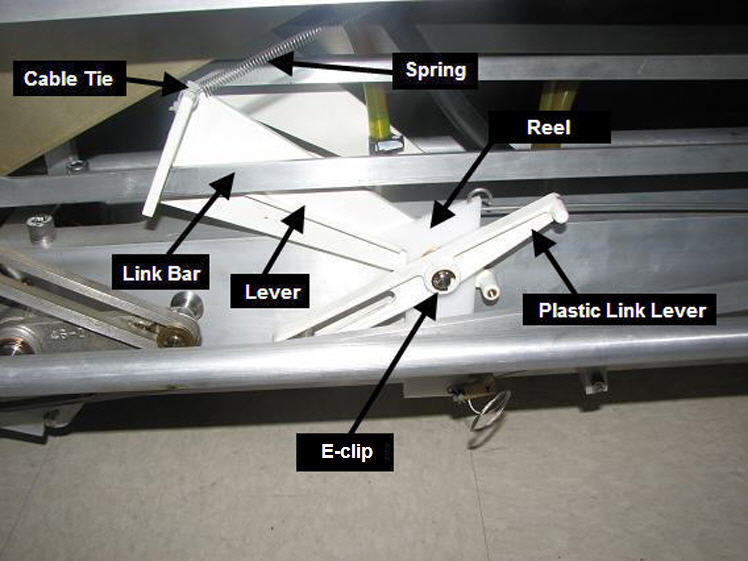
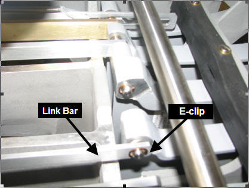
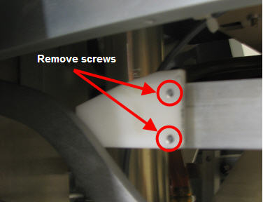

Operating Documentation
Direction 5500113, Rev# 3
Discovery MR450 1.5T Service Methods
Module Version 1.0, Version Date 7/1/10
Operating Documentation |
| Required Persons | Preliminary Reqs | Procedure | Finalization |
|---|---|---|---|
| 1 | Not Applicable | 60 mins | Not Applicable |
| Item | Qty | Effectivity | Part# | Manufacturer | |
|---|---|---|---|---|---|
| Nonmagnetic Tool Kit | 1 | - | 5112581 | - | |
| Small Cable Ties | Several | - | - | - | |
| Item | Qty | Effectivity | Part# | Manufacturer | |
|---|---|---|---|---|---|
| Link Undock | 1 | - | Refer to the appropriate FRU manual | - | |
| Lever | 1 | - | Refer to appropriate FRU manual. | - | |
Undock the patient table and remove it from the Magnet Room.
Remove both the left and right Lower Base Side Covers by removing the two screws holding each to the table assembly. Lift up and pull out each cover to release the Velcro® securing them to the Bellows.
Illustration 1: Table Covers

Remove the Rear Base Cover by removing the two top screws securing it to the Bellows and the two bottom screws securing the cover to the table base.
Illustration 2: Rear Base Covers

Lower the table Lock Safety Bar. Lower the table and verify that all weight is resting on the lock bar. See below.
Illustration 3: Table Lock Safety Bar

Locate the link assembly (shown below) behind the left Lower Base Cover. Check that the Link Bar and Lever move freely.
Illustration 4: Lever Assembly

Using a small screwdriver, remove the e-clip shown above. There are four parts to remove from the pin.
Maneuver the plastic link lever off both the guide and the pin.
Slide the reel off the pin, attached to a spring. (It will tend to pull away once it is removed.)
Slide the bushing off the pin.
Before removing the lever, locate and remove the e-clip that holds the link bar to the pedal at the rear of the table (shown below) with a small screwdriver.
Illustration 5: Location of E-clip and Link Bar

While holding the spring attached to the lever, cut the cable tie that attaches it to the lever.
Slide the Lever and the Link Bar off the pin.
Prior to replacing the old link bar, the block dock unhook will need to be removed for reuse with the new link bar. Remove the two screws holding the block dock unhook to the old link bar.
Illustration 6: Block Dock Unhook Screws

Once the block dock unhook is removed, slide the link bar off the lever.
Replace the required FRU(s).
Assemble parts onto the table by reversing the above steps.
Dock the table to the scanner, and verify proper operation of the dock unhook.
Dock the table and verify proper operation from the operator console.